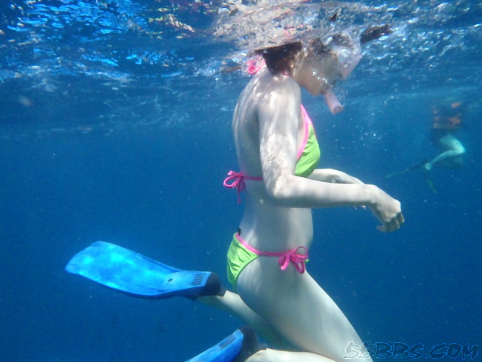
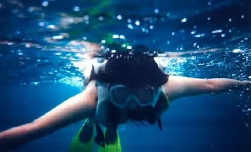
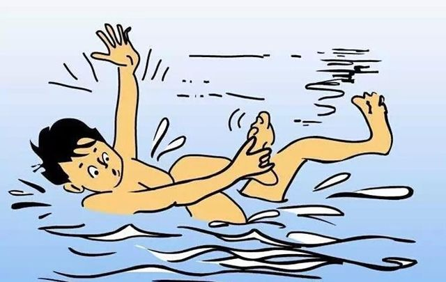

潜水季来啦！
夏季潜水该做什么准备？

爱，潜水
随着炎热夏季的来临，越来越多的人们选择潜水来作为休闲方式。但是在温度渐高的水中，我们怎样才能保证身体健康？怎么才能在防止中暑的同时，畅游大海？今天主页君就和小伙伴们分享下面这些话题，也许其中就有你需要的贴心技巧哦！

防止感冒
通常人们都会认为，夏季并不容易感冒，但事实上，在夏季潜水时，你的体温本身会比较高，而下水后水温一般都会低于体温，如果贪图凉爽，很可能会患感冒。因而，潜水员在下水之前要先作淋浴，使身体适应水温。
防止皮肤病的侵扰
炎炎夏日的确是潜水的好季节，但是在下水后，要注意因卫生问题引发的皮肤病。这一点首先是因为有些潜水地的海水并不是特别卫生，容易滋生细菌，会有一些潜水员在这些地方感觉浑身瘙痒，这就提醒我们要选择卫生条件达标的潜水地。其次，公共潜水地附近会有很多公用的设备，比如说你从潜水店租用的各种设备，这些设备在使用前要进行认真的清洁，洗掉上面残留的细菌，以避免感染，皮肤敏感的人要尽量避免租用潜水设备。

提防抽筋问题
抽筋问题别忽视：如果下潜之前心理紧张、水温太凉或待在海水里的时间太长，都有可能出现抽筋现象。朋友们千万不要因为夏天水温很高就忽视这一问题，要在下水前做好准备活动，也别在海里待太长时间，不要以为不超过免减压极限就可以了，要结合自己的身体状况来确定潜水时间。
作者：燕子
快来新蜂极酷关注我吧(*^__^*)
我要去玩！
我也要秀！
技术支持：
新蜂极酷女性运动APP >